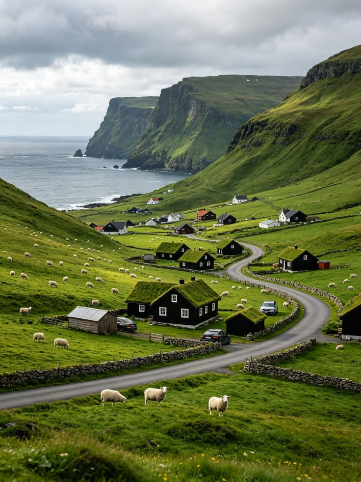
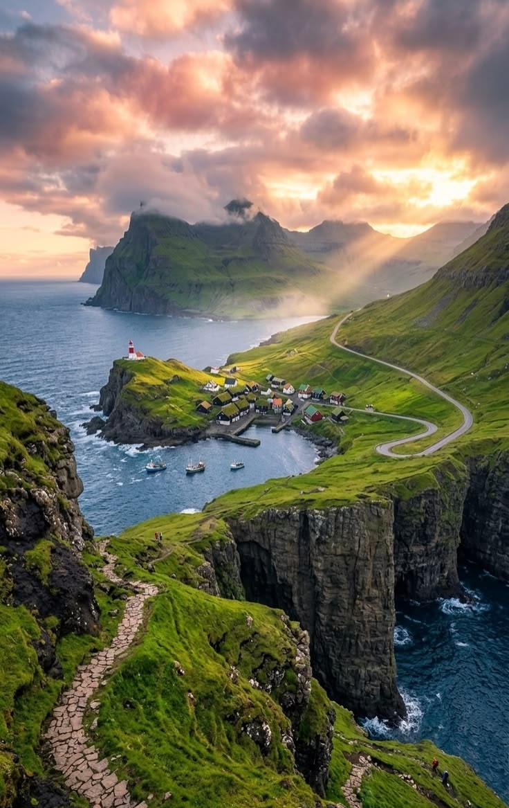
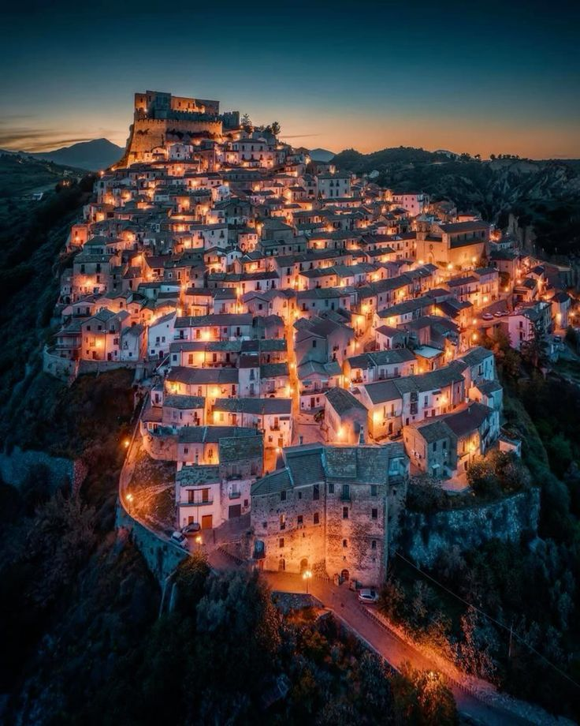
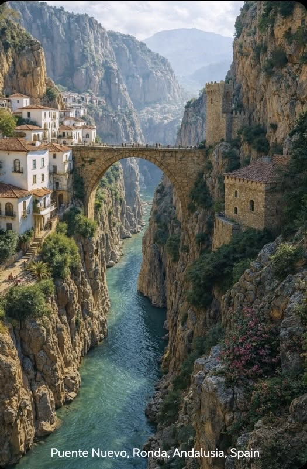

DISCOVER THE UNEXPECTED
HIDDEN GEMS
Beyond the famous landmarks and crowded destinations,
there are places waiting to be discovered. Explore
extraordinary villages, quiet landscapes and remarkable
corners of the world that often remain unnoticed.
Discover Hidden Places
Located on the island of Eysturoy, Gjógv is a small
coastal village known for its dramatic cliffs, colourful
houses and natural sea-filled gorge. Surrounded by
mountains and the North Atlantic Ocean, it offers a
peaceful glimpse into traditional Faroese life.



What Makes It Special
- Natural Gorge: A remarkable sea-filled gorge that gives the village its name.
- Scenic Landscapes: Steep mountains, green hills and dramatic ocean views.
- Traditional Houses: Colourful homes that reflect Faroese architecture.
- Quiet Atmosphere: A peaceful destination away from busy tourist centres.
Ine is a picturesque fishing village in Kyoto Prefecture,
Japan. It is famous for its traditional funaya houses,
which are built along the waterfront with boat garages
on their ground floors. The village combines coastal
scenery, traditional architecture and a slower way of life.
What Makes It Special
- Funaya Houses: Traditional wooden houses built directly beside the water.
- Fishing Heritage: A community whose history and daily life are closely connected to the sea.
- Coastal Views: Beautiful scenery across Ine Bay.
- Local Experience: A chance to experience a quieter side of rural Japan.
Nestled in the Rif Mountains of northern Morocco,
Chefchaouen is widely recognised for its blue-painted
streets, peaceful atmosphere and traditional buildings.
Its narrow pathways, local markets and mountain setting
make it one of the most visually distinctive towns in
the region.
What Makes It Special
- Blue Architecture: Distinctive blue-painted walls, doors and stairways.
- Mountain Setting: Located among the beautiful Rif Mountains.
- Local Crafts: Traditional textiles, handmade goods and local products.
- Historic Medina: A maze of narrow streets filled with Moroccan character.
04
HUNZA VALLEY, PAKISTAN
Passu
Passu is a beautiful village in the Upper Hunza region
of Gilgit-Baltistan, Pakistan. Surrounded by towering
mountains and glaciers, it is especially known for
the striking Passu Cones. The region offers dramatic
landscapes, traditional village life and breathtaking
views of the Karakoram range.
What Makes It Special
- Passu Cones: A dramatic series of pointed mountain peaks.
- Natural Beauty: Glaciers, rivers and breathtaking mountain scenery.
- Local Hospitality: A welcoming community with strong regional traditions.
- Adventure: Opportunities for trekking, photography and mountain exploration.
05
ITALY
Civita di Bagnoregio
Civita di Bagnoregio is a historic hilltop village
in central Italy, dramatically positioned on an
eroding plateau of volcanic rock. Often described
as a village suspended in time, it is reached by
a pedestrian bridge and is known for its medieval
streets, stone buildings and extraordinary setting.



What Makes It Special
- Hilltop Setting: A village perched on a fragile volcanic rock plateau.
- Medieval Architecture: Historic stone buildings and narrow pathways.
- Pedestrian Bridge: A distinctive bridge connecting the village to the surrounding area.
- Historic Atmosphere: A remarkable destination with a preserved medieval character.
THE WORLD IS FULL OF SURPRISES
Some Places Are Worth Finding.
The most memorable journeys are not always about
reaching famous destinations. Sometimes, they are
about discovering places you never knew existed.
Explore More Destinations